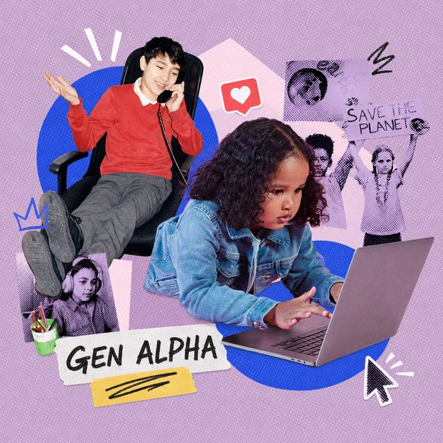

The Eclectic Polymath Podcast · Archive
#093 Gen Alpha: AI, Gaming, and the First Fully Digital Childhood

About this episode
Generation Alpha is not simply Gen Z at a younger age. They are the first generation growing up inside mature digital ecosystems, where AI, gaming platforms, algorithms, and parental mediation shape how they learn, play, socialize, and express themselves from the beginning.
This episode looks at what makes Gen Alpha distinct, breaking the generation into different developmental stages rather than treating millions of children as one uniform group. From Roblox and gaming-centered social spaces to AI-normalized classrooms and creator culture, their digital lives are built around participation, customization, and co-creation rather than passive consumption.
Key points
- Generation Alpha is not simply Gen Z at a younger age.
- They are the first generation growing up inside mature digital ecosystems, where AI, gaming platforms, algorithms, and parental mediation shape how they learn, play, socialize, and express themselves from the beginning.
- This episode looks at what makes Gen Alpha distinct, breaking the generation into different developmental stages rather than treating millions of children as one uniform group.
- From Roblox and gaming-centered social spaces to AI-normalized classrooms and creator culture, their digital lives are built around participation, customization, and co-creation rather than passive consumption.
More like this
#142 The Unabomber: Genius, Terror, and the Revolt Against TechnologyAugust 23, 202642:31#145 Nanotechnology: The Race to Build the World at Atomic ScaleAugust 23, 202645:27 #126 Josh Kushner: Thrive Capital, OpenAI, and the Quiet Architecture of PowerAugust 14, 202648:57
#126 Josh Kushner: Thrive Capital, OpenAI, and the Quiet Architecture of PowerAugust 14, 202648:57 #118 Satya Nadella: Microsoft, AI, and the Reinvention of a Tech GiantAugust 10, 202656:42
#118 Satya Nadella: Microsoft, AI, and the Reinvention of a Tech GiantAugust 10, 202656:42
#126 Josh Kushner: Thrive Capital, OpenAI, and the Quiet Architecture of PowerAugust 14, 202648:57#118 Satya Nadella: Microsoft, AI, and the Reinvention of a Tech GiantAugust 10, 202656:42